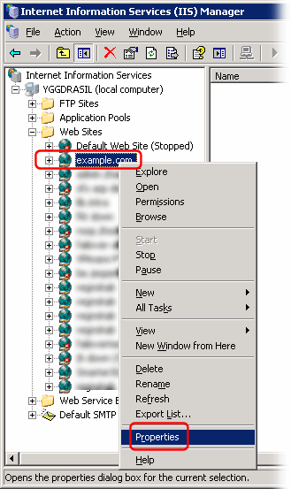
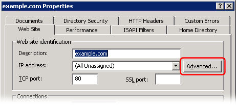

NOTE: Only IIS versions for Windows Server and Windows Vista support multiple web-sites as described below. If you are using Windows 98, Me, NT4 Workstation, Windows 2000 Professional, or Windows XP please see reference article below instead.
"Virtual hosting" means hosting multiple web-sites with different domain names on the same IP address.
This procedure is also described in Microsoft KB article Q190008
From the "Internet Information Services (IIS) Manager" window, right click on a web-site, and select "Properties":

In the web-site Properties dialog, click the "Advanced..." button:

In the "Advanced Web Site Identification" dialog, select the first "identity", and click the "Edit" button:
Enter the web-site domain name in the "Host Header Name" field:

Click the OK button in all the dialogs to save your changes.
Create additional web sites the same way.